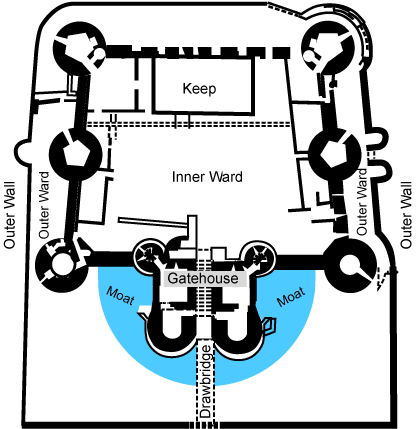

2.3 Defensa en profundidad
Los riesgos potenciales de Internet se pueden producir en varios niveles, por tanto, se deben configurar medidas de seguridad que ofrezcan múltiples capas de defensa contra los riesgos. La pregunta que debemos hacernos no es si hay alguna posibilidad de que se produzcan intrusiones o ataques en nuestro sistema conectado a Internet, sino que la pregunta debería ser ¿cuando los sufriremos?.
El uso de un enfoque por capas al planificar la estrategia de seguridad de Internet garantiza que el atacante que logre penetrar en una de las capas de defensa será detenido en una capa posterior o al menos le supondrá un esfuerzo mucho mayor lo que le llevará en muchas ocasiones a abandonar el intento.
La estrategia de seguridad debe incluir medidas que ofrezcan protección en las siguientes capas del modelo informático de red tradicional. En general, se debe planificar la seguridad desde el nivel más básico (seguridad del sistema) hasta el nivel más complejo (seguridad de transacciones):
Seguridad a nivel de sistema operativo. Las medidas de seguridad del sistema representan la última línea de defensa contra un problema de seguridad relacionado con Internet. Por lo tanto, el primer paso de una estrategia de seguridad en Internet completa debe ser configurar debidamente la seguridad básica del sistema.
Seguridad a nivel de red. Estas medidas controlan el acceso al propio sistema y a otros sistemas de la red. Cuando se conecta la red a Internet, hay que asegurarse de que están implantadas las debidas medidas de seguridad a nivel de la red para proteger los recursos internos de la red contra la intrusión y el acceso no autorizado. El medio más común para garantizar la seguridad de la red es un cortafuegos. El proveedor de servicios de Internet (ISP) puede proporcionar una parte importante del plan de seguridad de la red. El esquema de seguridad de la red debe indicar qué medidas de seguridad proporciona el ISP, como las reglas de filtrado de la conexión del router del ISP y las medidas de precaución del sistema de nombres de dominio público.
Seguridad a nivel de aplicaciones. Las medidas de seguridad a nivel de aplicaciones controlan cómo pueden interaccionar los usuarios con las aplicaciones concretas. En general, se tendrán que configurar valores de seguridad para cada una de las aplicaciones que se utilicen. Sin embargo, conviene prestar una atención especial al configurar la seguridad de las aplicaciones y los servicios que se utilizarán de Internet o que se proporcionarán a Internet. Estas aplicaciones y servicios son vulnerables al mal uso por parte de los usuarios no autorizados que buscan una manera de acceder a los sistemas de la red. Las medidas de seguridad deberán incluir los riesgos del lado del servidor y del lado del cliente.
Seguridad a nivel de transacciones. Las medidas de seguridad a nivel de transacción protegen las comunicaciones de datos dentro de la red y entre varias redes. Cuando se usa una red que no es de confianza como Internet, no podemos controlar cómo fluye el tráfico desde el origen hasta el destino. El tráfico y los datos transportados fluyen a través de distintos sistemas que están fuera de nuestro control. A menos que se implanten medidas de seguridad como las de configurar las aplicaciones para que utilicen la capa de sockets segura (SSL/TLS), los datos estarán a disposición de cualquier persona que desee verlos y utilizarlos. Las medidas de seguridad a nivel de transacción protegen los datos mientras fluyen por Internet.
La estrategia de defensa en profundidad se puede considerar un componente fundamental de otros principios de diseño de seguridad. Exige la aplicación de un enfoque en capas para la seguridad, tal y como se ha indicado anteriormente, y está dirigida a proporcionar controles redundantes en múltiples niveles para mitigar el riesgo.
Esta misma estrategia se usó en castillos medievales para proporcionar múltiples capas de defensa para resistir largos asedios. Además de múltiples capas de paredes (perímetros), un castillo medieval utilizaba una serie de mecanismos de protección, que a menudo se complementaban entre sí (como un foso, un puente levadizo, torres de bastiones, un patio exterior, un patio interior y un torreón interior):

La defensa en profundidad es una filosofía que proporciona seguridad en capas a un sistema mediante el uso de múltiples mecanismos de seguridad y generalmente sigue estos principios:
- Los mecanismos de seguridad deben respaldarse mutuamente y proporcionar diversidad y redundancia de protección.
- Los mecanismos de seguridad no deben depender el uno del otro, de modo que su seguridad no dependa de otros factores que estén fuera de su control.
- Al utilizar la defensa en profundidad, puede eliminar puntos únicos de fallo y aumentar los enlaces débiles en el sistema para proporcionar una protección más sólida con múltiples capas.
Si bien el concepto de defensa en profundidad es intuitivo, la complejidad de los sistemas modernos puede dificultar su implementación. Los sistemas modernos se pueden distribuir a través de múltiples procesos que se ejecutan dentro y entre sistemas computacionales dispersos a través de la intranet, extranet e Internet utilizando diversos recursos físicos y virtuales. Una analogía que se usa comúnmente para describir la estrategia de defensa en profundidad es una cebolla porque implica el uso de múltiples capas incrustadas.
{kind=link}
Sin embargo, debido a la distribución de recursos, las defensas de la red no pueden cubrir todos los componentes. Con sistemas distribuidos modernos, una alcachofa a menudo hace una mejor analogía que una cebolla. Si bien las protecciones se superponen entre sí, como los pétalos de una alcachofa, el compromiso de una sola defensa a menudo se puede utilizar como un trampolín para comprometer otras partes del sistema distribuido:
{kind=link}
La defensa en profundidad minimiza la probabilidad de que los esfuerzos de los atacantes malintencionados tengan éxito. Si un atacante obtiene acceso a la red, la defensa en profundidad minimiza el impacto y les da a los administradores de seguridad y analistas tiempo para implementar contramedidas nuevas o actualizadas para evitar que vuelvan a ocurrir.
Obra publicada con Licencia Creative Commons Reconocimiento No comercial Compartir igual 4.0